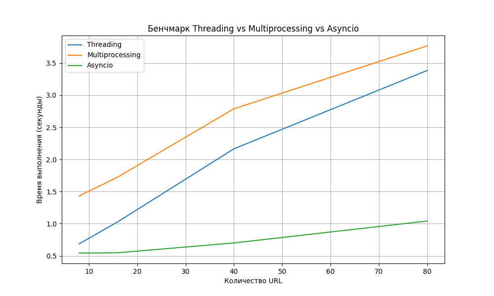

Задание:
Задача 1. Различия между threading, multiprocessing и async в Python
Напишите три различных программы на Python, использующие каждый из подходов: threading, multiprocessing и async. Каждая программа должна решать считать сумму всех чисел от 1 до 10000000000000. Разделите вычисления на несколько параллельных задач для ускорения выполнения.
Подробности задания:
- Напишите программу на Python для каждого подхода: threading, multiprocessing и async.
- Каждая программа должна содержать функцию calculate_sum(), которая будет выполнять вычисления.
- Для threading используйте модуль threading, для multiprocessing - модуль multiprocessing, а для async - ключевые слова async/await и модуль asyncio.
- Каждая программа должна разбить задачу на несколько подзадач и выполнять их параллельно.
- Замерьте время выполнения каждой программы и сравните результаты.
Задача 2. Параллельный парсинг веб-страниц с сохранением в базу данных
Напишите программу на Python для параллельного парсинга нескольких веб-страниц с сохранением данных в базу данных с использованием подходов threading, multiprocessing и async. Каждая программа должна парсить информацию с нескольких веб-сайтов, сохранять их в базу данных.
Подробности задания:
- Напишите три различных программы на Python, использующие каждый из подходов: threading, multiprocessing и async.
- Каждая программа должна содержать функцию parse_and_save(url), которая будет загружать HTML-страницу по указанному URL, парсить ее, сохранять заголовок страницы в базу данных и выводить результат на экран.
- Используйте базу данных из лабораторной работы номер 1 для заполенния ее данными. Если Вы не понимаете, какие таблицы и откуда Вы могли бы заполнить с помощью парсинга, напишите преподавателю в общем чате потока.
- Для threading используйте модуль threading, для multiprocessing - модуль multiprocessing, а для async - ключевые слова async/await и модуль aiohttp для асинхронных запросов.
- Создайте список нескольких URL-адресов веб-страниц для парсинга и разделите его на равные части для параллельного парсинга.
- Запустите параллельный парсинг для каждой программы и сохраните данные в базу данных.
- Замерьте время выполнения каждой программы и сравните результаты.
Дополнительные требования:
- Сделайте документацию, содержащую описание каждой программы, используемые подходы и их особенности.
- Включите в документацию таблицы, отображающие время выполнения каждой программы.
- Прокомментируйте результаты сравнения времени выполнения программ на основе разных подходов.
Задание 1
[Thread 0] Starting: 0 to 125000000[Thread 1] Starting: 125000000 to 250000000
[Thread 0] Finished: 0 to 125000000
[Thread 1] Finished: 125000000 to 250000000
[Thread 2] Starting: 250000000 to 375000000
[Thread 3] Starting: 375000000 to 500000000
[Thread 2] Finished: 250000000 to 375000000
[Thread 3] Finished: 375000000 to 500000000
[Thread 4] Starting: 500000000 to 625000000
[Thread 5] Starting: 625000000 to 750000000[Thread 4] Finished: 500000000 to 625000000
[Thread 5] Finished: 625000000 to 750000000
[Thread 6] Starting: 750000000 to 875000000
[Thread 7] Starting: 875000000 to 1000000000[Thread 6] Finished: 750000000 to 875000000
[Thread 7] Finished: 875000000 to 1000000000
Threading:
Time taken: 12.04 seconds
Result (last 10 digits): 9500000000
----------------------------------------
[Process 4] Starting: 500000000 to 625000000
[Process 2] Starting: 250000000 to 375000000
[Process 1] Starting: 125000000 to 250000000
[Process 0] Starting: 0 to 125000000
[Process 5] Starting: 625000000 to 750000000
[Process 3] Starting: 375000000 to 500000000
[Process 7] Starting: 875000000 to 1000000000
[Process 6] Starting: 750000000 to 875000000
[Process 7] Finished: 875000000 to 1000000000
[Process 1] Finished: 125000000 to 250000000
[Process 5] Finished: 625000000 to 750000000
[Process 6] Finished: 750000000 to 875000000
[Process 4] Finished: 500000000 to 625000000
[Process 3] Finished: 375000000 to 500000000
[Process 0] Finished: 0 to 125000000
[Process 2] Finished: 250000000 to 375000000
Multiprocessing:
Time taken: 2.76 seconds
Result (last 10 digits): 9500000000
----------------------------------------
[Task 0] Starting: 0 to 125000000
[Task 0] Finished: 0 to 125000000
[Task 1] Starting: 125000000 to 250000000
[Task 1] Finished: 125000000 to 250000000
[Task 2] Starting: 250000000 to 375000000
[Task 2] Finished: 250000000 to 375000000
[Task 3] Starting: 375000000 to 500000000
[Task 3] Finished: 375000000 to 500000000
[Task 4] Starting: 500000000 to 625000000
[Task 4] Finished: 500000000 to 625000000
[Task 5] Starting: 625000000 to 750000000
[Task 5] Finished: 625000000 to 750000000
[Task 6] Starting: 750000000 to 875000000
[Task 6] Finished: 750000000 to 875000000
[Task 7] Starting: 875000000 to 1000000000
[Task 7] Finished: 875000000 to 1000000000
Asyncio:
Time taken: 12.04 seconds
Result (last 10 digits): 9500000000
Видно, что на подобной CPU-bound задаче только multiprocessing дает заметный прирост производительности, потому что только он использует другие свободные ядра процессора и позволяет выполнять вычисления действительна параллельно, а не конкурентно
Бенчмарк:

Задание 2
Database parsed_data.db deleted.
[Thread 0] Parsing https://www.python.org
[Thread 3] Parsing https://www.sqlalchemy.org
[Thread 6] Parsing https://realpython.com
[Thread 4] Parsing https://docs.aiohttp.org
[Thread 2] Parsing https://flask.palletsprojects.com
[Thread 5] Parsing https://www.djangoproject.com
[Thread 1] Parsing https://www.asyncio.org
[Thread 7] Parsing https://fastapi.tiangolo.com
[Thread 2] Error parsing https://flask.palletsprojects.com: HTTPSConnectionPool(host='flask.palletsprojects.com', port=443): Max retries exceeded with url: / (Caused by NameResolutionError("<urllib3.connection.HTTPSConnection object at 0x1078bf020>: Failed to resolve 'flask.palletsprojects.com' ([Errno 8] nodename nor servname provided, or not known)"))
[Thread 2] Parsing https://fastapi.tiangolo.com
[Thread 5] Saved 'The web framework for perfectionists with deadlines | Django' from https://www.djangoproject.com
[Thread 5] Parsing https://flask.palletsprojects.com
[Thread 5] Error parsing https://flask.palletsprojects.com: HTTPSConnectionPool(host='flask.palletsprojects.com', port=443): Max retries exceeded with url: / (Caused by NameResolutionError("<urllib3.connection.HTTPSConnection object at 0x107c477a0>: Failed to resolve 'flask.palletsprojects.com' ([Errno 8] nodename nor servname provided, or not known)"))
[Thread 5] Parsing https://fastapi.tiangolo.com
[Thread 0] Saved 'Welcome to Python.org' from https://www.python.org
[Thread 0] Parsing https://www.djangoproject.com
[Thread 7] Saved 'FastAPI' from https://fastapi.tiangolo.com
[Thread 7] Parsing https://docs.aiohttp.org
[Thread 4] Saved 'Welcome to AIOHTTP — aiohttp 3.11.18 documentation' from https://docs.aiohttp.org
[Thread 4] Parsing https://www.asyncio.org
[Thread 2] Saved 'FastAPI' from https://fastapi.tiangolo.com
[Thread 2] Parsing https://docs.aiohttp.org
[Thread 3] Saved '
SQLAlchemy - The Database Toolkit for Python
' from https://www.sqlalchemy.org
[Thread 3] Parsing https://www.python.org
[Thread 0] Saved 'The web framework for perfectionists with deadlines | Django' from https://www.djangoproject.com
[Thread 0] Parsing https://flask.palletsprojects.com
[Thread 0] Error parsing https://flask.palletsprojects.com: HTTPSConnectionPool(host='flask.palletsprojects.com', port=443): Max retries exceeded with url: / (Caused by NameResolutionError("<urllib3.connection.HTTPSConnection object at 0x1119706b0>: Failed to resolve 'flask.palletsprojects.com' ([Errno 8] nodename nor servname provided, or not known)"))
[Thread 0] Parsing https://fastapi.tiangolo.com
[Thread 5] Saved 'FastAPI' from https://fastapi.tiangolo.com
[Thread 5] Parsing https://docs.aiohttp.org
[Thread 6] Saved 'Python Tutorials – Real Python' from https://realpython.com
[Thread 6] Parsing https://www.sqlalchemy.org
[Thread 1] Saved 'No Title' from https://www.asyncio.org
[Thread 1] Parsing https://realpython.com
[Thread 2] Saved 'Welcome to AIOHTTP — aiohttp 3.11.18 documentation' from https://docs.aiohttp.org
[Thread 2] Parsing https://www.asyncio.org
[Thread 7] Saved 'Welcome to AIOHTTP — aiohttp 3.11.18 documentation' from https://docs.aiohttp.org
[Thread 7] Parsing https://www.asyncio.org
[Thread 3] Saved 'Welcome to Python.org' from https://www.python.org
[Thread 3] Parsing https://www.djangoproject.com
[Thread 0] Saved 'FastAPI' from https://fastapi.tiangolo.com
[Thread 0] Parsing https://docs.aiohttp.org
[Thread 5] Saved 'Welcome to AIOHTTP — aiohttp 3.11.18 documentation' from https://docs.aiohttp.org
[Thread 5] Parsing https://www.asyncio.org
[Thread 4] Saved 'No Title' from https://www.asyncio.org
[Thread 4] Parsing https://realpython.com
[Thread 3] Saved 'The web framework for perfectionists with deadlines | Django' from https://www.djangoproject.com
[Thread 3] Parsing https://flask.palletsprojects.com
[Thread 6] Saved '
SQLAlchemy - The Database Toolkit for Python
' from https://www.sqlalchemy.org
[Thread 6] Parsing https://www.python.org
[Thread 3] Error parsing https://flask.palletsprojects.com: HTTPSConnectionPool(host='flask.palletsprojects.com', port=443): Max retries exceeded with url: / (Caused by NameResolutionError("<urllib3.connection.HTTPSConnection object at 0x1120cb020>: Failed to resolve 'flask.palletsprojects.com' ([Errno 8] nodename nor servname provided, or not known)"))
[Thread 3] Parsing https://fastapi.tiangolo.com
[Thread 0] Saved 'Welcome to AIOHTTP — aiohttp 3.11.18 documentation' from https://docs.aiohttp.org
[Thread 1] Saved 'Python Tutorials – Real Python' from https://realpython.com
[Thread 1] Parsing https://www.sqlalchemy.org
[Thread 6] Saved 'Welcome to Python.org' from https://www.python.org
[Thread 6] Parsing https://www.djangoproject.com
[Thread 2] Saved 'No Title' from https://www.asyncio.org
[Thread 2] Parsing https://realpython.com
[Thread 7] Saved 'No Title' from https://www.asyncio.org
[Thread 7] Parsing https://realpython.com
[Thread 5] Saved 'No Title' from https://www.asyncio.org
[Thread 3] Saved 'FastAPI' from https://fastapi.tiangolo.com
[Thread 6] Saved 'The web framework for perfectionists with deadlines | Django' from https://www.djangoproject.com
[Thread 6] Parsing https://flask.palletsprojects.com
[Thread 4] Saved 'Python Tutorials – Real Python' from https://realpython.com
[Thread 4] Parsing https://www.sqlalchemy.org
[Thread 6] Error parsing https://flask.palletsprojects.com: HTTPSConnectionPool(host='flask.palletsprojects.com', port=443): Max retries exceeded with url: / (Caused by NameResolutionError("<urllib3.connection.HTTPSConnection object at 0x112896db0>: Failed to resolve 'flask.palletsprojects.com' ([Errno 8] nodename nor servname provided, or not known)"))
[Thread 1] Saved '
SQLAlchemy - The Database Toolkit for Python
' from https://www.sqlalchemy.org
[Thread 1] Parsing https://www.python.org
[Thread 2] Saved 'Python Tutorials – Real Python' from https://realpython.com
[Thread 1] Saved 'Welcome to Python.org' from https://www.python.org
[Thread 1] Parsing https://www.djangoproject.com
[Thread 7] Saved 'Python Tutorials – Real Python' from https://realpython.com
[Thread 7] Parsing https://www.sqlalchemy.org
[Thread 4] Saved '
SQLAlchemy - The Database Toolkit for Python
' from https://www.sqlalchemy.org
[Thread 4] Parsing https://www.python.org
[Thread 1] Saved 'The web framework for perfectionists with deadlines | Django' from https://www.djangoproject.com
[Thread 4] Saved 'Welcome to Python.org' from https://www.python.org
[Thread 7] Saved '
SQLAlchemy - The Database Toolkit for Python
' from https://www.sqlalchemy.org
Threading:
Time taken: 2.16 seconds
----------------------------------------
[Process 3] Parsing https://www.sqlalchemy.org
[Process 5] Parsing https://www.djangoproject.com
[Process 0] Parsing https://www.python.org
[Process 2] Parsing https://flask.palletsprojects.com
[Process 4] Parsing https://docs.aiohttp.org
[Process 6] Parsing https://realpython.com
[Process 2] Error parsing https://flask.palletsprojects.com: HTTPSConnectionPool(host='flask.palletsprojects.com', port=443): Max retries exceeded with url: / (Caused by NameResolutionError("<urllib3.connection.HTTPSConnection object at 0x10659f410>: Failed to resolve 'flask.palletsprojects.com' ([Errno 8] nodename nor servname provided, or not known)"))
[Process 2] Parsing https://fastapi.tiangolo.com
[Process 7] Parsing https://fastapi.tiangolo.com
[Process 1] Parsing https://www.asyncio.org
[Process 5] Saved 'The web framework for perfectionists with deadlines | Django' from https://www.djangoproject.com
[Process 5] Parsing https://flask.palletsprojects.com
[Process 5] Error parsing https://flask.palletsprojects.com: HTTPSConnectionPool(host='flask.palletsprojects.com', port=443): Max retries exceeded with url: / (Caused by NameResolutionError("<urllib3.connection.HTTPSConnection object at 0x107cd69f0>: Failed to resolve 'flask.palletsprojects.com' ([Errno 8] nodename nor servname provided, or not known)"))
[Process 5] Parsing https://fastapi.tiangolo.com
[Process 0] Saved 'Welcome to Python.org' from https://www.python.org
[Process 0] Parsing https://www.djangoproject.com
[Process 7] Saved 'FastAPI' from https://fastapi.tiangolo.com
[Process 7] Parsing https://docs.aiohttp.org
[Process 2] Saved 'FastAPI' from https://fastapi.tiangolo.com
[Process 2] Parsing https://docs.aiohttp.org
[Process 4] Saved 'Welcome to AIOHTTP — aiohttp 3.11.18 documentation' from https://docs.aiohttp.org
[Process 4] Parsing https://www.asyncio.org
[Process 3] Saved '
SQLAlchemy - The Database Toolkit for Python
' from https://www.sqlalchemy.org
[Process 3] Parsing https://www.python.org
[Process 0] Saved 'The web framework for perfectionists with deadlines | Django' from https://www.djangoproject.com
[Process 0] Parsing https://flask.palletsprojects.com
[Process 0] Error parsing https://flask.palletsprojects.com: HTTPSConnectionPool(host='flask.palletsprojects.com', port=443): Max retries exceeded with url: / (Caused by NameResolutionError("<urllib3.connection.HTTPSConnection object at 0x105c29220>: Failed to resolve 'flask.palletsprojects.com' ([Errno 8] nodename nor servname provided, or not known)"))
[Process 0] Parsing https://fastapi.tiangolo.com
[Process 5] Saved 'FastAPI' from https://fastapi.tiangolo.com
[Process 5] Parsing https://docs.aiohttp.org
[Process 6] Saved 'Python Tutorials – Real Python' from https://realpython.com
[Process 6] Parsing https://www.sqlalchemy.org
[Process 2] Saved 'Welcome to AIOHTTP — aiohttp 3.11.18 documentation' from https://docs.aiohttp.org
[Process 2] Parsing https://www.asyncio.org
[Process 7] Saved 'Welcome to AIOHTTP — aiohttp 3.11.18 documentation' from https://docs.aiohttp.org
[Process 7] Parsing https://www.asyncio.org
[Process 1] Saved 'No Title' from https://www.asyncio.org
[Process 1] Parsing https://realpython.com
[Process 3] Saved 'Welcome to Python.org' from https://www.python.org
[Process 3] Parsing https://www.djangoproject.com
[Process 0] Saved 'FastAPI' from https://fastapi.tiangolo.com
[Process 0] Parsing https://docs.aiohttp.org
[Process 5] Saved 'Welcome to AIOHTTP — aiohttp 3.11.18 documentation' from https://docs.aiohttp.org
[Process 5] Parsing https://www.asyncio.org
[Process 3] Saved 'The web framework for perfectionists with deadlines | Django' from https://www.djangoproject.com
[Process 3] Parsing https://flask.palletsprojects.com
[Process 3] Error parsing https://flask.palletsprojects.com: HTTPSConnectionPool(host='flask.palletsprojects.com', port=443): Max retries exceeded with url: / (Caused by NameResolutionError("<urllib3.connection.HTTPSConnection object at 0x1043091c0>: Failed to resolve 'flask.palletsprojects.com' ([Errno 8] nodename nor servname provided, or not known)"))
[Process 3] Parsing https://fastapi.tiangolo.com
[Process 4] Saved 'No Title' from https://www.asyncio.org
[Process 4] Parsing https://realpython.com
[Process 6] Saved '
SQLAlchemy - The Database Toolkit for Python
' from https://www.sqlalchemy.org
[Process 6] Parsing https://www.python.org
[Process 0] Saved 'Welcome to AIOHTTP — aiohttp 3.11.18 documentation' from https://docs.aiohttp.org
[Process 3] Saved 'FastAPI' from https://fastapi.tiangolo.com
[Process 2] Saved 'No Title' from https://www.asyncio.org
[Process 2] Parsing https://realpython.com
[Process 1] Saved 'Python Tutorials – Real Python' from https://realpython.com
[Process 1] Parsing https://www.sqlalchemy.org
[Process 7] Saved 'No Title' from https://www.asyncio.org
[Process 7] Parsing https://realpython.com
[Process 6] Saved 'Welcome to Python.org' from https://www.python.org
[Process 6] Parsing https://www.djangoproject.com
[Process 5] Saved 'No Title' from https://www.asyncio.org
[Process 6] Saved 'The web framework for perfectionists with deadlines | Django' from https://www.djangoproject.com
[Process 6] Parsing https://flask.palletsprojects.com
[Process 6] Error parsing https://flask.palletsprojects.com: HTTPSConnectionPool(host='flask.palletsprojects.com', port=443): Max retries exceeded with url: / (Caused by NameResolutionError("<urllib3.connection.HTTPSConnection object at 0x1068b77d0>: Failed to resolve 'flask.palletsprojects.com' ([Errno 8] nodename nor servname provided, or not known)"))
[Process 4] Saved 'Python Tutorials – Real Python' from https://realpython.com
[Process 4] Parsing https://www.sqlalchemy.org
[Process 2] Saved 'Python Tutorials – Real Python' from https://realpython.com
[Process 7] Saved 'Python Tutorials – Real Python' from https://realpython.com
[Process 7] Parsing https://www.sqlalchemy.org
[Process 1] Saved '
SQLAlchemy - The Database Toolkit for Python
' from https://www.sqlalchemy.org
[Process 1] Parsing https://www.python.org
[Process 1] Saved 'Welcome to Python.org' from https://www.python.org
[Process 1] Parsing https://www.djangoproject.com
[Process 4] Saved '
SQLAlchemy - The Database Toolkit for Python
' from https://www.sqlalchemy.org
[Process 4] Parsing https://www.python.org
[Process 7] Saved '
SQLAlchemy - The Database Toolkit for Python
' from https://www.sqlalchemy.org
[Process 1] Saved 'The web framework for perfectionists with deadlines | Django' from https://www.djangoproject.com
[Process 4] Saved 'Welcome to Python.org' from https://www.python.org
Multiprocessing:
Time taken: 2.57 seconds
----------------------------------------
[Task 0] Parsing https://www.python.org
[Task 1] Parsing https://www.djangoproject.com
[Task 2] Parsing https://flask.palletsprojects.com
[Task 3] Parsing https://fastapi.tiangolo.com
[Task 4] Parsing https://docs.aiohttp.org
[Task 5] Parsing https://www.asyncio.org
[Task 6] Parsing https://realpython.com
[Task 7] Parsing https://www.sqlalchemy.org
[Task 8] Parsing https://www.python.org
[Task 9] Parsing https://www.djangoproject.com
[Task 10] Parsing https://flask.palletsprojects.com
[Task 11] Parsing https://fastapi.tiangolo.com
[Task 12] Parsing https://docs.aiohttp.org
[Task 13] Parsing https://www.asyncio.org
[Task 14] Parsing https://realpython.com
[Task 15] Parsing https://www.sqlalchemy.org
[Task 16] Parsing https://www.python.org
[Task 17] Parsing https://www.djangoproject.com
[Task 18] Parsing https://flask.palletsprojects.com
[Task 19] Parsing https://fastapi.tiangolo.com
[Task 20] Parsing https://docs.aiohttp.org
[Task 21] Parsing https://www.asyncio.org
[Task 22] Parsing https://realpython.com
[Task 23] Parsing https://www.sqlalchemy.org
[Task 24] Parsing https://www.python.org
[Task 25] Parsing https://www.djangoproject.com
[Task 26] Parsing https://flask.palletsprojects.com
[Task 27] Parsing https://fastapi.tiangolo.com
[Task 28] Parsing https://docs.aiohttp.org
[Task 29] Parsing https://www.asyncio.org
[Task 30] Parsing https://realpython.com
[Task 31] Parsing https://www.sqlalchemy.org
[Task 32] Parsing https://www.python.org
[Task 33] Parsing https://www.djangoproject.com
[Task 34] Parsing https://flask.palletsprojects.com
[Task 35] Parsing https://fastapi.tiangolo.com
[Task 36] Parsing https://docs.aiohttp.org
[Task 37] Parsing https://www.asyncio.org
[Task 38] Parsing https://realpython.com
[Task 39] Parsing https://www.sqlalchemy.org
[Task 34] Error parsing https://flask.palletsprojects.com: Cannot connect to host flask.palletsprojects.com:443 ssl:False [nodename nor servname provided, or not known]
[Task 10] Error parsing https://flask.palletsprojects.com: Cannot connect to host flask.palletsprojects.com:443 ssl:False [nodename nor servname provided, or not known]
[Task 26] Error parsing https://flask.palletsprojects.com: Cannot connect to host flask.palletsprojects.com:443 ssl:False [nodename nor servname provided, or not known]
[Task 18] Error parsing https://flask.palletsprojects.com: Cannot connect to host flask.palletsprojects.com:443 ssl:False [nodename nor servname provided, or not known]
[Task 2] Error parsing https://flask.palletsprojects.com: Cannot connect to host flask.palletsprojects.com:443 ssl:False [nodename nor servname provided, or not known]
[Task 17] Error parsing https://www.djangoproject.com: attempt to write a readonly database
[Task 9] Error parsing https://www.djangoproject.com: attempt to write a readonly database
[Task 25] Error parsing https://www.djangoproject.com: attempt to write a readonly database
[Task 1] Error parsing https://www.djangoproject.com: attempt to write a readonly database
[Task 33] Error parsing https://www.djangoproject.com: attempt to write a readonly database
[Task 27] Error parsing https://fastapi.tiangolo.com: attempt to write a readonly database
[Task 8] Error parsing https://www.python.org: attempt to write a readonly database
[Task 19] Error parsing https://fastapi.tiangolo.com: attempt to write a readonly database
[Task 16] Error parsing https://www.python.org: attempt to write a readonly database
[Task 24] Error parsing https://www.python.org: attempt to write a readonly database
[Task 32] Error parsing https://www.python.org: attempt to write a readonly database
[Task 11] Error parsing https://fastapi.tiangolo.com: attempt to write a readonly database
[Task 0] Error parsing https://www.python.org: attempt to write a readonly database
[Task 35] Error parsing https://fastapi.tiangolo.com: attempt to write a readonly database
[Task 3] Error parsing https://fastapi.tiangolo.com: attempt to write a readonly database
[Task 4] Error parsing https://docs.aiohttp.org: attempt to write a readonly database
[Task 20] Error parsing https://docs.aiohttp.org: attempt to write a readonly database
[Task 12] Error parsing https://docs.aiohttp.org: attempt to write a readonly database
[Task 28] Error parsing https://docs.aiohttp.org: attempt to write a readonly database
[Task 6] Error parsing https://realpython.com: attempt to write a readonly database
[Task 22] Error parsing https://realpython.com: attempt to write a readonly database
[Task 14] Error parsing https://realpython.com: attempt to write a readonly database
[Task 36] Error parsing https://docs.aiohttp.org: attempt to write a readonly database
[Task 38] Error parsing https://realpython.com: attempt to write a readonly database
[Task 30] Error parsing https://realpython.com: attempt to write a readonly database
[Task 39] Error parsing https://www.sqlalchemy.org: attempt to write a readonly database
[Task 7] Error parsing https://www.sqlalchemy.org: attempt to write a readonly database
[Task 23] Error parsing https://www.sqlalchemy.org: attempt to write a readonly database
[Task 15] Error parsing https://www.sqlalchemy.org: attempt to write a readonly database
[Task 31] Error parsing https://www.sqlalchemy.org: attempt to write a readonly database
[Task 5] Error parsing https://www.asyncio.org: attempt to write a readonly database
[Task 37] Error parsing https://www.asyncio.org: attempt to write a readonly database
[Task 13] Error parsing https://www.asyncio.org: attempt to write a readonly database
[Task 21] Error parsing https://www.asyncio.org: attempt to write a readonly database
[Task 29] Error parsing https://www.asyncio.org: attempt to write a readonly database
Asyncio:
Time taken: 0.67 seconds
Видно, что asyncio самый быстрый, так как использует один поток.
threading быстрее чем multiprocessing, потому что создавать и поддерживать процессы сильно дороже чем потоки.
Бенчмарк:

Выводы:
Для CPU-bound задач используем multiprocessing,
для IO-bound задач используем либо asyncio, либо threading, в зависимости от количества задач, сложности проекта и доступных библиотек.